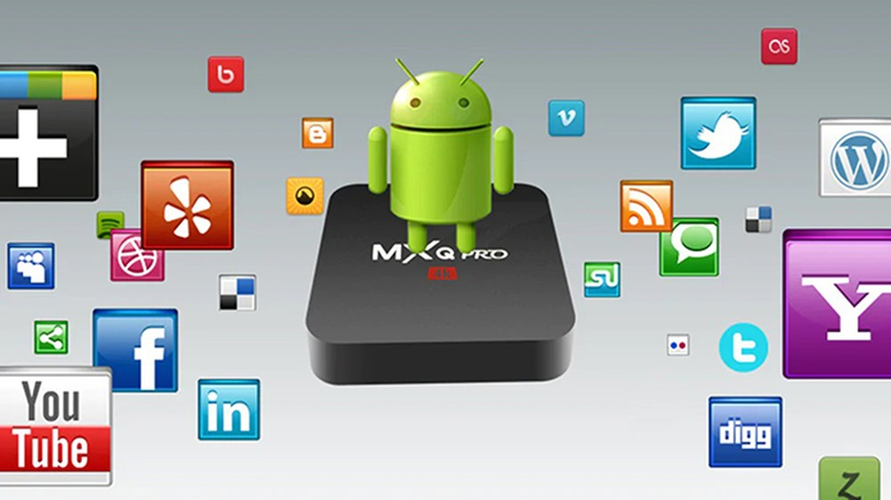
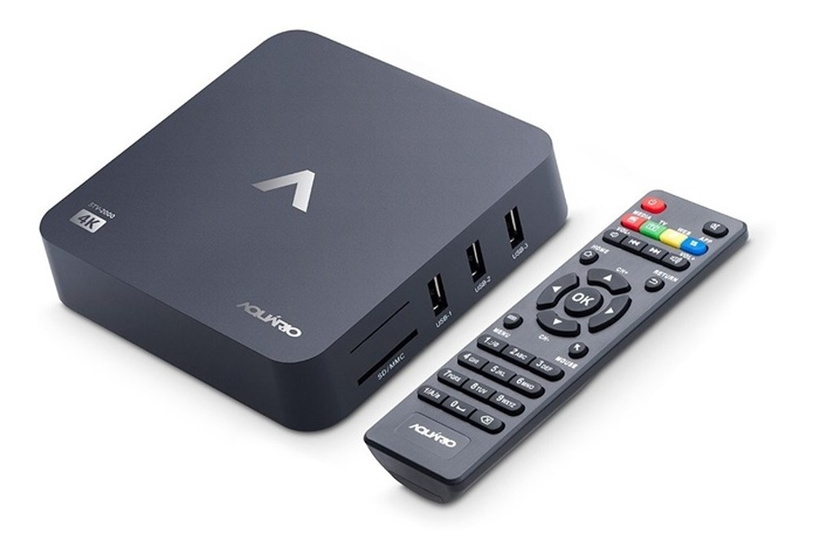

Powerbeats é o novo fone Bluetooth da Beats. O acessório já aparece no site oficial da marca por US$ 149,95, algo em torno de R$ 750 na cotação atual, ficando US$ 50 (R$ 252) mais baixo em relação ao Powerbeats 3, de geração anterior. Entre suas principais novidades está a presença do chip Apple H1, presente também no Powerbeats Pro, versão premium da marca. O componente permite ativar a Siri apenas por meio de comandos de voz e também traz maior integração com dispositivos da maçã. A empresa não chegou a anunciar o produto oficialmente, e o acessório fica disponível após um consumidor flagrar o produto à venda em uma loja física nos Estados Unidos. Por enquanto, ainda não há previsão de chegada do produto ao Brasil.
dispositivo é do tipo esportivo, trazendo um encaixe mais firme para as orelhas e certificação iPX4, que garante proteção superior a água e suor. O fio que liga os auriculares e repousa sobre a nuca do usuário também ganhou um design arredondado, que promete evitar emaranhados. Antes de chegar ao site oficial, o modelo foi encontrado por um usuário em uma loja nos Estados Unidos e reportado aos sites especializados em assuntos da Apple 9to5mac e Mac Rumors pelo Twitter.
Via Beats, The Verge.Chromecast e TV Box são duas alternativas que prometem transformar sua TV em smart. Os aparelhos têm como vantagem o fato de serem uma solução mais barata, permitindo acessar os principais serviços de streaming do mercado, como Netflix, Globoplay e Amazon Prime Video. Enquanto o dispositivo do Google é mais portátil e confiável, as set-top boxes aparecem em opções menos conhecidas, mas contam com sistemas operacionais completos. Confira a seguir os prós e contras do Chromecast 3 e das TV Boxes com Android à venda no Brasil.
Além de salvar as listas na conta, o recurso permite compartilhar uma imagem com a apresentação das listas para que amigos das redes sociais possam curtir e comentar sua atividade no serviço de streaming. A seguir, confira como ativar as playlists para descobrir as músicas mais ouvidas por você no Spotify.
Quase todos os aplicativos de streaming são compatíveis com o Chromecast: Netflix, HBO Go, Amazon Prime Video, Globoplay, Telecine Play e Premiere são alguns deles. A compatibilidade também envolve apps de música, como Spotify e Deezer, e produtividade, como o Google Slides. Há ainda diversos players de vídeo independentes que permitem reproduzir arquivos armazenados na memória do celular ou do PC, como VLC, LocalCast e Videostream. Além disso, qualquer site do desktop pode ser espelhado por meio do Google Chrome.
A principal desvantagem do Chromecast é a falta de interface própria. Ele não exibe menus na TV para navegar e procurar pelos conteúdos desejados; todas as interações são feitas pelo celular. O usuário deve abrir um aplicativo no telefone, iniciar a conexão com o Chromecast e transmitir o vídeo para a TV via Wi-Fi. Por isso, o aparelho também não acompanha controle remoto, o que significa que é preciso ter o smartphone sempre à mão para tarefas tão simples quanto dar play e pause na reprodução – a menos que a TV seja compatível com HDMI CEC.
O Chromecast é feito basicamente para transmitir conteúdo armazenado em outro dispositivo, seja de serviços online ou do celular ou computador do usuário. Isso significa que não é possível armazenar arquivos diretamente em sua memória interna, muito menos instalar aplicativos diretamente nele. Ele roda apenas uma versão modificada do Google Chrome: na prática, é um navegador com usabilidade própria para TVs. Essas características o torna pouco indicado para quem deseja criar uma central de mídia completa, com filmes, séries e músicas de uma biblioteca pessoal acessíveis por meio do Wi-Fi.